-
dissmapr: Compositional Dissimilarity and Biodiversity Turnover Analysis
- Introduction
-
Step-by-Step Workflow
- 1. Install and load
dissmapr - 2. Load other R libraries
- 3. Load user-defined area of interest and set grid resolution
- 4. Get species occurrence records using
get_occurrence_data - 5. Format data using
format_df - 6. Summarise records by grid centroid using
generate_grid - 7. Fetch site by species matrix created using
generate_grid - 8. Generate site by environment matrix using
get_enviro_data - 9. Change coordinates projection using
sf::st_transform - 10. Check for colinearity using
rm_correlated - 11. Calculate Zeta decline for orders 2:15
- 12. Calculate Zeta decay for orders 2:8
- 13. Run a Multi-Site Generalised Dissimilarity Model for order 2
- 14. Predict current Zeta Diversity (zeta2) using
predict_dissim - 15. Run clustering analyses using
map_bioreg - 16. Predict future Zeta Diversity and map bioregion change using
map_bioregDiff - 17. Deposit all results into Zenodo
- 1. Install and load
Introduction
dissmapr is an R package for analysing compositional dissimilarity and biodiversity turnover across spatial gradients. It provides scalable, modular workflows that integrate species occurrence, environmental data, and multi-site metrics to quantify and predict biodiversity patterns. A core feature is the use of zeta diversity, which extends beyond pairwise comparisons to capture shared species across multiple sites—offering deeper insight into community assembly, turnover, and connectivity. By incorporating modern approaches such as multi-site Generalised Dissimilarity Modelling (MS-GDM), dissmapr enables robust mapping, bioregional classification, and scenario-based forecasting. Designed for flexibility and reproducibility, it supports biodiversity monitoring and conservation planning at landscape to regional scales.
Step-by-Step Workflow
dissmapr implements a structured, reproducible workflow for analysing biodiversity patterns and delineating bioregions. Each function aligns with a specific step, guiding users from data acquisition to predictive mapping. The workflow begins with sourcing species occurrence and georeferenced environmental data, followed by data formatting and calculation of compositional turnover using zeta diversity metrics (via the zetadiv package). Multi-Site Generalized Dissimilarity Modelling (MS-GDM) is then applied to model and predict dissimilarity across landscapes. These predictions feed into the Dissimilarity Cube, which classifies spatial clusters of species composition into distinct bioregions. The framework supports the integration of historical and future climate data to assess shifts in biodiversity and detect emerging, shifting, or dissolving bioregions under global change. This step-by-step structure, mirrored in the accompanying tutorial sections, promotes accessibility, transparency, and ecological insight at multiple spatial and temporal scales.
1. Install and load dissmapr
Install and load the dissmapr package from GitHub, ensuring all functions are available for use in the analysis workflow.
# install remotes if needed
# install.packages("remotes")
remotes::install_github("macSands/dissmapr")
# Ensure the package is loaded when knitting
library(dissmapr)
# Make sure all the functions are loaded
devtools::load_all()2. Load other R libraries
Load core libraries for spatial processing, biodiversity modelling, and visualization required across the dissmapr analysis pipeline.
# Load necessary libraries
library(httr) # HTTP client
library(geodata) # Download geographic data
library(data.table) # Fast large-table operations
library(dplyr) # Data manipulation verbs
library(tidyr) # Tidy data reshaping
library(zoo) # Time series utilities
library(sf) # Vector spatial data
library(terra) # Raster spatial operations
library(zetadiv) # Multi-site biodiversity turnover
library(ggplot2) # Grammar of graphics
library(viridis) # Perceptual color scales 3. User-defined area of interest and grid resolution
Load the spatial boundary data for South Africa to serve as the geographic reference for all subsequent biodiversity analyses and visualizations.
# Read RSA shape file
rsa = sf::st_read('inst/extdata/rsa.shp')
#> Reading layer `rsa' from data source
#> `D:\Methods\R\myR_Packages\myCompletePks\dissmapr\inst\extdata\rsa.shp' using driver `ESRI Shapefile'
#> Simple feature collection with 1 feature and 1 field
#> Geometry type: POLYGON
#> Dimension: XY
#> Bounding box: xmin: 16.45802 ymin: -34.83514 xmax: 32.89125 ymax: -22.12661
#> Geodetic CRS: WGS 84
# Define your resolution and create mask to use later
res = 0.5 # 0.5 degrees is roughly 55km
# Convert to a terra vector
rsa_vect = vect(rsa)
# Create an empty raster over RSA at your desired resolution
grid = rast(rsa_vect, resolution = res, crs = crs(rsa_vect))
values(grid) = 1 # fill with dummy values
# Mask everything outside the RSA boundary
grid_masked = mask(grid, rsa_vect)4. Get species occurrence records using get_occurrence_data
This section focuses on automating the retrieval and pre-processing of biodiversity occurrence data from various sources, including:
- local
databases.csv` files, - URLs or
.zipfiles from the Global Biodiversity Information Facility (GBIF), and - species occurrence cubes from B3 (specification) [work in progress].
The function assembles data on species distributions across specified taxonomic groups and regions, producing presence-absence or abundance matrices that quantify species co-occurrence within locations.
bfly_data = get_occurrence_data(
data = 'inst/extdata/gbif_butterflies.csv',
source_type = 'local_csv',
sep = '\t'
)
# Check results
dim(bfly_data)
#> [1] 81825 52
head(bfly_data[,1:6])
#> gbifID datasetKey occurrenceID kingdom phylum class
#> 1 923051749 6ac3f774-d9fb-4796-b3e9-92bf6c81c084 Animalia Arthropoda Insecta
#> 2 922985630 6ac3f774-d9fb-4796-b3e9-92bf6c81c084 Animalia Arthropoda Insecta
#> 3 922619348 6ac3f774-d9fb-4796-b3e9-92bf6c81c084 Animalia Arthropoda Insecta
#> 4 922426210 6ac3f774-d9fb-4796-b3e9-92bf6c81c084 Animalia Arthropoda Insecta
#> 5 921650584 6ac3f774-d9fb-4796-b3e9-92bf6c81c084 Animalia Arthropoda Insecta
#> 6 921485695 6ac3f774-d9fb-4796-b3e9-92bf6c81c084 Animalia Arthropoda Insecta5. Format data using format_df
Use format_df to standardise and reshape biodiversity data into long or wide formats. The function automatically identifies key columns (e.g., coordinates, species, and values), assigns missing site IDs, and reformats the data for analysis. Outputs include a cleaned dataset and species-site matrices for further processing:
• site_xy: Holds spatial coordinates of sampled sites.
• site_sp: Site-by-species matrix for biodiversity assessments.
Format data into long and wide formats
bfly_result = format_df(
data = bfly_data,
species_col = 'verbatimScientificName',
value_col = 'pa',
extra_cols = NULL,
format = 'long'
)
# Optional: Create new objects from list items
site_obs = bfly_result$site_obs
site_spp = bfly_result$site_sp
# Check results
dim(site_obs)
#> [1] 79953 5
head(site_obs)
#> site_id x y species value
#> 1 1 19.24410 -34.42086 Pieris brassicae 1
#> 2 2 18.75564 -33.96044 Pieris brassicae 1
#> 3 3 18.40321 -33.91651 Papilio demodocus subsp. demodocus 1
#> 4 1 19.24410 -34.42086 Mylothris agathina subsp. agathina 1
#> 5 4 18.47488 -34.35024 Eutricha capensis 1
#> 6 5 25.65097 -33.58570 Drepanogynis bifasciata 1
dim(site_spp)
#> [1] 56090 2871
head(site_spp[,1:6])
#> # A tibble: 6 × 6
#> site_id x y `Mylothris agathina subsp. agathina` `Pieris brassicae` `Tarucus thespis`
#> <int> <dbl> <dbl> <dbl> <dbl> <dbl>
#> 1 1 19.2 -34.4 1 1 1
#> 2 2 18.8 -34.0 0 1 0
#> 3 3 18.4 -33.9 0 0 0
#> 4 4 18.5 -34.4 0 0 0
#> 5 5 25.7 -33.6 0 0 0
#> 6 6 22.2 -33.6 0 0 06. Summarise records by grid centroid using generate_grid
Use generate_grid to divide the study area, derived from the geographic extent of the occurrence data above, into grids of user-defined resolution, creating a spatial grid over a specified geographic extent. It assigns unique grid IDs to points and summarizes selected data columns within each grid cell. The function outputs a raster grid, grid polygons for visualization, and a data frame summarizing the contents of each grid cell, including totals and centroids. It is particularly useful for aggregating spatial data, such as biodiversity observations, into predefined spatial units for further analysis.
Assign records to a grid at a set resolution (e.g. 0.5°)
Aggregate species records into equal-area grid cells to enable spatially standardized biodiversity analyses.
grid_list = generate_grid(
data = site_spp,
x_col = "x",
y_col = "y",
grid_size = 0.5,
sum_col_range = 4:ncol(site_spp),
crs_epsg = 4326
)
# Optional: Create new objects from list items
aoi_grid = grid_list$grid_sf
grid_spp = grid_list$block_sp
# Check results
dim(aoi_grid)
#> [1] 1110 8
head(aoi_grid)
#> Simple feature collection with 6 features and 6 fields
#> Active geometry column: geometry
#> Geometry type: POLYGON
#> Dimension: XY
#> Bounding box: xmin: 15.5 ymin: -36 xmax: 18.5 ymax: -35.5
#> Geodetic CRS: WGS 84
#> centroid_lon centroid_lat grid_id mapsheet obs_sum spp_rich geometry
#> 1 15.75 -35.75 1 E015S36BB NA NA POLYGON ((15.5 -36, 16 -36,...
#> 2 16.25 -35.75 2 E016S36BB NA NA POLYGON ((16 -36, 16.5 -36,...
#> 3 16.75 -35.75 3 E016S36BB NA NA POLYGON ((16.5 -36, 17 -36,...
#> 4 17.25 -35.75 4 E017S36BB NA NA POLYGON ((17 -36, 17.5 -36,...
#> 5 17.75 -35.75 5 E017S36BB NA NA POLYGON ((17.5 -36, 18 -36,...
#> 6 18.25 -35.75 6 E018S36BB NA NA POLYGON ((18 -36, 18.5 -36,...
#> centroid
#> 1 POINT (15.75 -35.75)
#> 2 POINT (16.25 -35.75)
#> 3 POINT (16.75 -35.75)
#> 4 POINT (17.25 -35.75)
#> 5 POINT (17.75 -35.75)
#> 6 POINT (18.25 -35.75)
dim(grid_spp)
#> [1] 415 2874
head(grid_spp[,1:6])
#> grid_id centroid_lon centroid_lat mapsheet obs_sum spp_rich
#> 1 1026 28.75 -22.25004 E028S23BB 3 2
#> 2 1027 29.25 -22.25004 E029S23BB 41 31
#> 3 1028 29.75 -22.25004 E029S23BB 10 10
#> 4 1029 30.25 -22.25004 E030S23BB 7 7
#> 5 1030 30.75 -22.25004 E030S23BB 6 6
#> 6 1031 31.25 -22.25004 E031S23BB 107 76Generate a data frame ‘xy’ of site centroids
Extract longitude–latitude coordinates and summary metrics for each occupied grid cell.
# Grid centroids with 'gird_id', 'centroid_lon', 'centroid_lat', 'obs_sum' and `spp_rich`
grid_xy = grid_spp[,c(1:3,5:6)]
# Create species observations data.frame
spp_obs = site_obs
# Check results
dim(grid_xy)
#> [1] 415 5
head(grid_xy)
#> grid_id centroid_lon centroid_lat obs_sum spp_rich
#> 1 1026 28.75 -22.25004 3 2
#> 2 1027 29.25 -22.25004 41 31
#> 3 1028 29.75 -22.25004 10 10
#> 4 1029 30.25 -22.25004 7 7
#> 5 1030 30.75 -22.25004 6 6
#> 6 1031 31.25 -22.25004 107 76
dim(spp_obs)
#> [1] 79953 5
head(spp_obs)
#> site_id x y species value
#> 1 1 19.24410 -34.42086 Pieris brassicae 1
#> 2 2 18.75564 -33.96044 Pieris brassicae 1
#> 3 3 18.40321 -33.91651 Papilio demodocus subsp. demodocus 1
#> 4 1 19.24410 -34.42086 Mylothris agathina subsp. agathina 1
#> 5 4 18.47488 -34.35024 Eutricha capensis 1
#> 6 5 25.65097 -33.58570 Drepanogynis bifasciata 1Generate a map of RSA with occupied grid cells as centroid points
Visualize observation density across South Africa using centroid-based mapping of gridded biodiversity data.
ggplot() +
geom_sf(data = aoi_grid, fill = NA, color = "darkgrey", alpha = 0.5) +
geom_point(data = grid_spp,
aes(x = centroid_lon, y = centroid_lat,
size = sqrt(obs_sum),
color = sqrt(obs_sum))) +
scale_color_viridis_c(option = "turbo") +
geom_sf(data = rsa, fill = NA, color = "black") +
theme_minimal() +
labs(title = "0.5° Grid with Observation Counts",
x = "Longitude", y = "Latitude")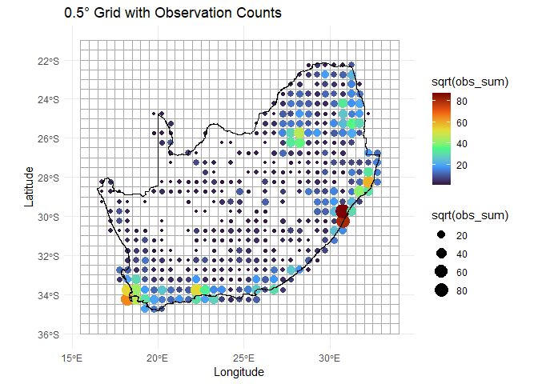
Example 1 - Species Richness
Here we calculate species richness across sites in the block_sp dataset, again using the compute_orderwise function. The richness function is applied to the grid_id column for site identification, with species data specified by sp_cols. Orders 1 to 4 are computed i.e. for order=1, it computes basic species richness at individual sites, while higher orders (2 to 4) represent the differences in richness between pairwise and/or multi-site combinations. A subset of 1000 samples is used for higher-order computations to speed-up computation time. Parallel processing is enabled with 4 worker threads to improve performance. The output is a table summarizing species richness across specified orders.
# Compute species richness (order 1) and the difference thereof for orders 2 to 4
rich_o1234 = compute_orderwise(
df = grid_spp,
func = richness,
site_col = 'grid_id',
sp_cols = sp_cols,
sample_no = 1000,
order = 1:4,
parallel = TRUE,
n_workers = 4)
#> Time elapsed for order 1: 0 minutes and 4.51 seconds
#> Time elapsed for order 2: 0 minutes and 13.64 seconds
#> Time elapsed for order 3: 0 minutes and 51.50 seconds
#> Time elapsed for order 4: 1 minutes and 59.10 seconds
#> Total computation time: 1 minutes and 59.11 seconds
# Check results
head(rich_o1234)
#> site_from site_to order value
#> <char> <char> <int> <int>
#> 1: 1026 <NA> 1 2
#> 2: 1027 <NA> 1 31
#> 3: 1028 <NA> 1 10
#> 4: 1029 <NA> 1 7
#> 5: 1030 <NA> 1 6
#> 6: 1031 <NA> 1 76
# Plot species richness distribution by order
boxplot(value ~ order,
data = rich_o1234,
col = c('#4575b4', '#99ce8f', '#fefab8', '#d73027'),
horizontal = TRUE,
outline = FALSE,
main = 'Distribution of Species Richness by Order')
# Link centroid coordinates back to `rich_o1234` data.frame for plotting
rich_o1234$centroid_lon = grid_spp$centroid_lon[match(rich_o1234$site_from, grid_spp$grid_id)]
rich_o1234$centroid_lat = grid_spp$centroid_lat[match(rich_o1234$site_from, grid_spp$grid_id)]
# Summarise turnover by site (spatial location)
mean_rich_o1234 = rich_o1234 %>%
group_by(order, site_from, centroid_lon, centroid_lat) %>%
summarize(value = mean(value, na.rm = TRUE))
# Check results
head(mean_rich_o1234)
#> # A tibble: 6 × 5
#> # Groups: order, site_from, centroid_lon [6]
#> order site_from centroid_lon centroid_lat value
#> <int> <chr> <dbl> <dbl> <dbl>
#> 1 1 1026 28.8 -22.3 2
#> 2 1 1027 29.2 -22.3 31
#> 3 1 1028 29.7 -22.3 10
#> 4 1 1029 30.3 -22.3 7
#> 5 1 1030 30.8 -22.3 6
#> 6 1 1031 31.3 -22.3 76Example 2 - Community Turnover
Here we calculate species turnover (beta diversity) across sites in the block_sp dataset using the compute_orderwise function again. The turnover function is applied to the grid_id column for site identification, with species data specified by sp_cols. Order = 1 is not an option because turnover requires a comparison between sites. For orders 2 to 5, it computes turnover for pairwise and higher-order site combinations, representing the proportion of species not shared between sites. A subset of 1000 samples is used for higher-order comparisons. Parallel processing with 4 worker threads improves efficiency, and the output is a table summarizing species turnover across the specified orders.
# Compute community turnover for orders 2 to 5
turn_o2345 = compute_orderwise(
df = grid_spp,
func = turnover,
site_col = 'grid_id',
sp_cols = sp_cols, # OR `names(grid_spp)[-c(1:4)]`
sample_no = 1000, # Reduce to speed-up computation
order = 2:5,
parallel = TRUE,
n_workers = 4)
#> Time elapsed for order 2: 0 minutes and 17.00 seconds
#> Time elapsed for order 3: 1 minutes and 25.83 seconds
#> Time elapsed for order 4: 2 minutes and 45.40 seconds
#> Time elapsed for order 5: 4 minutes and 29.85 seconds
#> Total computation time: 4 minutes and 29.87 seconds
# Check results
head(turn_o2345)
#> site_from site_to order value
#> <char> <char> <int> <num>
#> 1: 1027 1026 2 0.9354839
#> 2: 1028 1026 2 0.9090909
#> 3: 1029 1026 2 1.0000000
#> 4: 1030 1026 2 1.0000000
#> 5: 1031 1026 2 0.9870130
#> 6: 117 1026 2 1.0000000To visualize the spatial patterns of turnover across sites, geographic coordinates are added back to the results. This allows spatial exploration of turnover patterns across different orders, highlighting regions of high or low turnover and enabling comparisons across orders. These visualizations provide valuable insights into spatial biodiversity dynamics. Below we assign the geographic coordinates (x and y) from the block_sp dataset to the turn_o2345 results. Using match, it aligns the coordinates to the site_from column in turn_o2345 based on the corresponding grid_id values in block_sp. This prepares the dataset for spatial plotting.
# Add coordinates back to 'turn_o2345' for plotting
turn_o2345$centroid_lon = grid_spp$centroid_lon[match(turn_o2345$site_from, grid_spp$grid_id)]
turn_o2345$centroid_lat = grid_spp$centroid_lat[match(turn_o2345$site_from, grid_spp$grid_id)]
# Summarise turnover by site (spatial location)
mean_turn_o2345 = turn_o2345 %>%
group_by(order, site_from, centroid_lon, centroid_lat) %>%
summarize(value = mean(value, na.rm = TRUE))
# Plot Beta Diversity (pairwise turnover i.e. only order 2) calculated using `compute_orderwise(..., func = turnover, ...)`
ggplot() +
geom_tile(data = mean_turn_o2345[mean_turn_o2345$order==2,],
aes(x = centroid_lon, y = centroid_lat, fill = value)) +
scale_fill_gradientn(colors = viridis(8)) + #Apply viridis color palette
geom_sf(data = rsa, fill = NA, color = "black", alpha = 0.5) +
theme_minimal() +
labs(x = "Longitude", y = "Latitude", fill = "Beta Diversity") +
theme(panel.grid = element_blank(),panel.border = element_blank()
)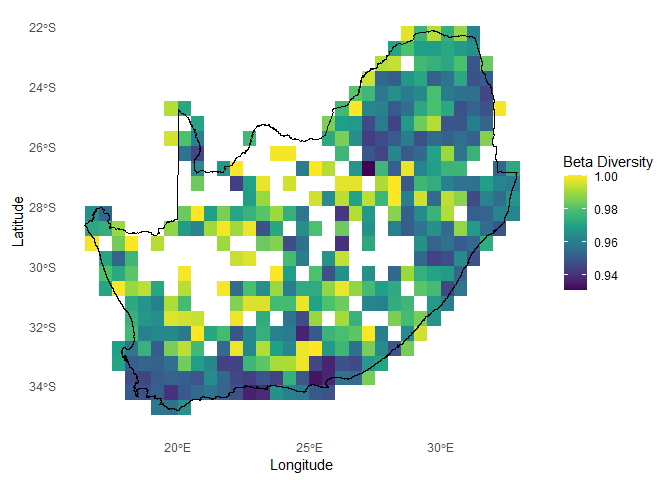
Plot order-wise turnover (orders 2:5) calculated using compute_orderwise(..., func = turnover, ...) to visualise spatial patterns of turnover across different orders. Results highlight regions of high or low turnover and facilitate comparison across orders, providing insights into spatial biodiversity dynamics.
# Plot order-wise turnover (orders 2:5) calculated using `compute_orderwise(..., func = turnover, ...)`
ggplot() +
geom_tile(data = mean_turn_o2345, aes(x = centroid_lon, y = centroid_lat, fill = value)) +
scale_fill_viridis_c(option = "turbo", name = "Turnover") +
geom_sf(data = rsa, fill = NA, color = "black", alpha = 0.5) +
theme_minimal() +
labs(
title = "Mean Turnover by Order",
x = "Longitude",
y = "Latitude"
) +
facet_wrap(~ order, ncol = 2)
7. Generate site by species matrix - site_spp
Create a matrix of species counts per site for use in biodiversity and dissimilarity analyses.
xy = grid_spp[,2:3]
site_spp = grid_spp[,c(1:3,5:ncol(grid_spp))]
# Check results
dim(xy)
#> [1] 415 2
head(xy)
#> centroid_lon centroid_lat
#> 1 28.75 -22.25004
#> 2 29.25 -22.25004
#> 3 29.75 -22.25004
#> 4 30.25 -22.25004
#> 5 30.75 -22.25004
#> 6 31.25 -22.25004
dim(site_spp)
#> [1] 415 2873
head(site_spp[,1:6])
#> grid_id centroid_lon centroid_lat obs_sum spp_rich Mylothris agathina subsp. agathina
#> 1 1026 28.75 -22.25004 3 2 0
#> 2 1027 29.25 -22.25004 41 31 0
#> 3 1028 29.75 -22.25004 10 10 0
#> 4 1029 30.25 -22.25004 7 7 0
#> 5 1030 30.75 -22.25004 6 6 0
#> 6 1031 31.25 -22.25004 107 76 0Fetch record of occurrence counts calculated using generate_grid
generate_grid summarised the number of species observations per grid cell to assess sampling effort.
# Sampling effort = observation counts
sam_eff = grid_spp[, c("grid_id","centroid_lon","centroid_lat","obs_sum")]
obs_cnt = grid_spp[,c(1:3,5)]
# Check results
dim(obs_cnt)
#> [1] 415 4
head(obs_cnt)
#> grid_id centroid_lon centroid_lat obs_sum
#> 1 1026 28.75 -22.25004 3
#> 2 1027 29.25 -22.25004 41
#> 3 1028 29.75 -22.25004 10
#> 4 1029 30.25 -22.25004 7
#> 5 1030 30.75 -22.25004 6
#> 6 1031 31.25 -22.25004 107Generate a binary (presence/absence) data frame ‘sbs’
Convert species abundance data to presence/absence format (site_spp_pa) for binary dissimilarity analyses.
# Create site-by-species matrix
sbs = site_spp %>%
mutate(across(all_of(sp_cols), ~ ifelse(. > 0, 1, 0)))
# Check results
dim(sbs)
#> [1] 415 2873
head(sbs[,1:6])
#> grid_id centroid_lon centroid_lat obs_sum spp_rich Mylothris agathina subsp. agathina
#> 1 1026 28.75 -22.25004 3 2 0
#> 2 1027 29.25 -22.25004 41 31 0
#> 3 1028 29.75 -22.25004 10 10 0
#> 4 1029 30.25 -22.25004 7 7 0
#> 5 1030 30.75 -22.25004 6 6 0
#> 6 1031 31.25 -22.25004 107 76 0
# Assuming 'sp_cols' is a vector of column names
site_spp_pa = site_spp %>%
mutate(across(all_of(sp_cols), ~ ifelse(!is.na(.) & . > 0, 1, 0)))
# Check results
dim(site_spp_pa)
#> [1] 415 2873
head(site_spp_pa[,1:6])
#> grid_id centroid_lon centroid_lat obs_sum spp_rich Mylothris agathina subsp. agathina
#> 1 1026 28.75 -22.25004 3 2 0
#> 2 1027 29.25 -22.25004 41 31 0
#> 3 1028 29.75 -22.25004 10 10 0
#> 4 1029 30.25 -22.25004 7 7 0
#> 5 1030 30.75 -22.25004 6 6 0
#> 6 1031 31.25 -22.25004 107 76 0Fetch species richness values calculated using generate_grid
generate_grid calculated species richness per site based on binary presence/absence records.
# Species richness
spp_rich = grid_spp[, c("grid_id","centroid_lon","centroid_lat","spp_rich")]
# Check results
dim(site_spp_pa)
#> [1] 415 2873
head(site_spp_pa[,1:6])
#> grid_id centroid_lon centroid_lat obs_sum spp_rich Mylothris agathina subsp. agathina
#> 1 1026 28.75 -22.25004 3 2 0
#> 2 1027 29.25 -22.25004 41 31 0
#> 3 1028 29.75 -22.25004 10 10 0
#> 4 1029 30.25 -22.25004 7 7 0
#> 5 1030 30.75 -22.25004 6 6 0
#> 6 1031 31.25 -22.25004 107 76 0Generate ‘obs_cnt’ and ‘spp_rich’ raster maps
generate_grid also creates a SpatRast to help visualise sampling effort and species richness over the study area.
# Species richness and sampling effort SpatRast
ras_effRich = grid_list$grid[[2:3]]
# Plot `ras_effRich` using colour palettes from `viridis`
plot(sqrt(ras_effRich), col = turbo(100))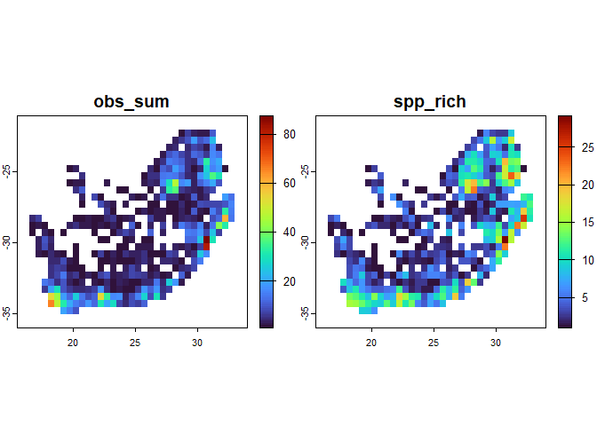
Note: occurrence coordinates are only used for assigning then into grids; they are not needed beyond this step.
8. Generate site by environment matrix using get_enviro_data
Use get_enviro_data to extract environmental variables for spatial points from either species observations or grid centroids. Data can be sourced from online repositories (e.g. WorldClim, SoilGrids via geodata) or local rasters. The function defines an area of interest with a buffer, extracts selected variables, and interpolates missing values using nearby non-NA points. Outputs include cropped rasters, spatial points (as an sf object), and a combined site-by-environment data frame (site_env) for downstream ecological analyses. Future support will extend to CHELSA (climenv), Google Earth Engine (rgee), and mapme.biodiversity for expanded environmental and biodiversity data access.
# Use `get_enviro_data` to fetch environmental data for your grid centroids
enviro_list = get_enviro_data(
data = sbs,
buffer_km = 10,
source = 'geodata',
var = "bio",
res = 5,
path = 'download_data',
sp_cols = 6:ncol(sbs),
ext_cols = c('obs_sum','spp_rich')
)
# Optional: Create new objects from list items
ras_enviro = enviro_list$env_rast
# Optional: Rename the columns to something more descriptive
names_env = c("temp_mean", "mdr", "iso", "temp_sea", "temp_max",
"temp_min", "temp_rang","temp_wetQ","temp_dryQ", "temp_warmQ",
"temp_coldQ", "rain_mean","rain_wet", "rain_dry", "rain_sea",
"rain_wetQ", "rain_dryQ","rain_warmQ", "rain_coldQ")
names(enviro_list$env_rast) = names_env
names(ras_enviro) = names_envAdd ‘eff-rich’ raster to the enviro stack raster
Combine environmental rasters with sampling effort and species richness layers for joint spatial analysis.
# Combine `SpatRast`
ras_enviro_effRich = c(ras_effRich, resample(ras_enviro, ras_effRich))
# Plot the first 4 layers of `ras_enviro_effRich`
plot(ras_enviro_effRich[[1:4]])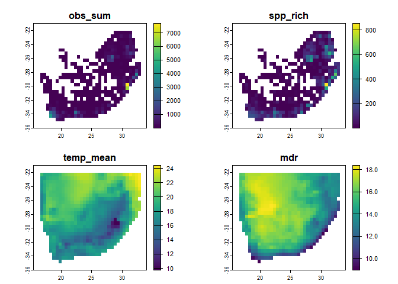
Create data.frame of environmental variables with site centroids ‘xy’
Environmental data were linked to grid centroids using get_enviro_data, now visualise the spatial variation in selected climate variables to check results.
# Create `env_df`
env_df = enviro_list$env_df[,c(1:5,8:26)]
# Make sure column names are correct
names(env_df) = c("grid_id","centroid_lon","centroid_lat","obs_sum","spp_rich","temp_mean",
"mdr", "iso", "temp_sea", "temp_max",
"temp_min", "temp_rang","temp_wetQ","temp_dryQ", "temp_warmQ",
"temp_coldQ", "rain_mean","rain_wet", "rain_dry", "rain_sea",
"rain_wetQ", "rain_dryQ","rain_warmQ", "rain_coldQ")
# Check results
dim(env_df)
#> [1] 415 24
head(env_df[,1:6])
#> grid_id centroid_lon centroid_lat obs_sum spp_rich temp_mean
#> 1 1026 28.75 -22.25004 3 2 21.88425
#> 2 1027 29.25 -22.25004 41 31 21.76921
#> 3 1028 29.75 -22.25004 10 10 21.53492
#> 4 1029 30.25 -22.25004 7 7 23.01796
#> 5 1030 30.75 -22.25004 6 6 23.59879
#> 6 1031 31.25 -22.25004 107 76 24.57367
# Plot the results to check the conversion is accurate
ggplot() +
# Add 0.25deg grid layer
geom_sf(data = aoi_grid, fill = NA, color = "darkgrey", alpha = 0.5) +
# Add bfly points layer
geom_point(data = env_df,
aes(x = centroid_lon,
y = centroid_lat,
size = sqrt(temp_mean),
color = temp_mean)) +
scale_color_viridis_c(option = "turbo") + # Use turbo color scale
# Add boundary layer
geom_sf(data = rsa, fill = NA, color = "black", alpha = 1) +
theme_minimal() +
labs(
title = "0.5° Grid Cells with temp_mean",
x = "Longitude",
y = "Latitude") 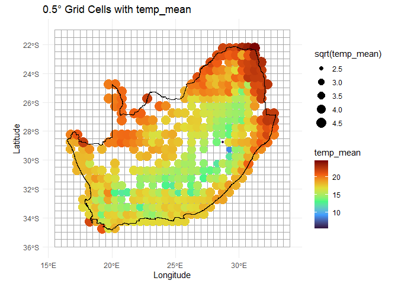
Generate Site-by-Environment data frame ‘sbe’
Create a unified data frame of site coordinates, sampling effort, richness, and environmental variables for modelling called sbe.
# Create `sbe` data.frame
sbe = env_df %>%
select(grid_id, centroid_lon, centroid_lat, obs_sum, spp_rich, everything())9. Change coordinates projection using sf::st_transform
Reproject spatial coordinates from geographic (WGS84) to a projected system (e.g. Albers Equal Area) for analyses requiring distance in meters, such as spatial clustering or environmental modelling.
# Convert to sf object with WGS84 geographic CRS
xy_sf = st_as_sf(xy, coords = c("centroid_lon", "centroid_lat"), crs = 4326)
# Project to Albers Equal Area (meters)
xy_utm = st_transform(xy_sf, crs = 9822)
# Extract transformed coordinates in meters
# Combine transformed coordinates back into data frame
xy_utm_df = cbind(xy, st_coordinates(xy_utm))
# Check results and compare coordinate formats
head(xy)
#> centroid_lon centroid_lat
#> 1 28.75 -22.25004
#> 2 29.25 -22.25004
#> 3 29.75 -22.25004
#> 4 30.25 -22.25004
#> 5 30.75 -22.25004
#> 6 31.25 -22.25004
head(xy_utm_df)
#> centroid_lon centroid_lat X Y
#> 1 28.75 -22.25004 6392274 -6836200
#> 2 29.25 -22.25004 6480542 -6808542
#> 3 29.75 -22.25004 6568648 -6780369
#> 4 30.25 -22.25004 6656587 -6751682
#> 5 30.75 -22.25004 6744357 -6722482
#> 6 31.25 -22.25004 6831955 -669277010. Check for colinearity using rm_correlated
Identify and remove highly correlated environmental variables to reduce multicollinearity in subsequent analyses. This step ensures model stability by retaining only informative, non-redundant predictors based on a user-defined correlation threshold.
# Remove the highly correlated variables
env_vars_reduced = rm_correlated(data = env_df[,c(4,6:24)],
cols = NULL,
threshold = 0.7,
plot = TRUE)
#> Variables removed due to high correlation:
#> [1] "temp_rang" "temp_sea" "mdr" "temp_max" "rain_mean" "rain_dryQ" "temp_min"
#> [8] "temp_warmQ" "temp_coldQ" "rain_coldQ" "rain_wetQ" "rain_wet" "rain_sea"
#>
#> Variables retained:
#> [1] "obs_sum" "temp_mean" "iso" "temp_wetQ" "temp_dryQ" "rain_dry" "rain_warmQ"
# Compare numbers of environmental variables
ncol(env_df[,c(4,6:24)])
#> [1] 20
ncol(env_vars_reduced)
#> [1] 711. Calculate Zeta decline for orders 2:15
Expectation of zeta diversity decline using zetadiv::Zeta.decline.ex
Computes the expectation of zeta diversity, the number of species shared by multiple assemblages for a range of orders (number of assemblages or sites), using a formula based on the occupancy of the species, and fits the decline to an exponential and a power law relationship. Generate statistics and figures, no maps
zeta_decline_ex = Zeta.decline.ex(site_spp_pa[,6:ncol(site_spp_pa)],
orders = 1:15)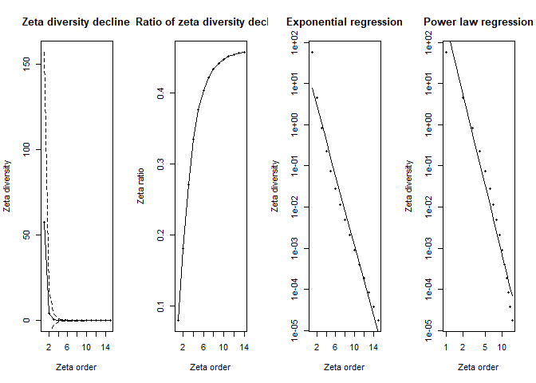
- Panel 1 (Zeta diversity decline): Shows how rapidly species that are common across multiple sites decline as you look at groups of more and more sites simultaneously (increasing zeta order). The sharp drop means fewer species are shared among many sites compared to just a few.
- Panel 2 (Ratio of zeta diversity decline): Illustrates the proportion of shared species that remain as the number of sites compared increases. A steeper curve indicates that common species quickly become rare across multiple sites.
- Panel 3 (Exponential regression): Tests if the decline in shared species fits an exponential decrease. A straight line here indicates that species commonness decreases rapidly and consistently as more sites are considered together. Exponential regression represents stochastic assembly (randomness determining species distributions).
- Panel 4 (Power law regression): Tests if the decline follows a power law relationship. A straight line suggests that the loss of common species follows a predictable pattern, where initially many species are shared among fewer sites, but rapidly fewer are shared among larger groups. Power law regression represents niche-based sorting (environmental factors shaping species distributions).
Interpretation: The near‐perfect straight line in the exponential panel (high R²) indicates that an exponential model provides the most parsimonious description of how species shared across sites decline as you add more sites—consistent with a stochastic, memory-less decline in common species. A power law will also fit in broad strokes, but deviates at high orders, suggesting exponential decay is the better choice for these data.
Zeta diversity decline using Monte Carlo sampling zetadiv::Zeta.decline.mc
Computes zeta diversity, the number of species shared by multiple assemblages, for a range of orders (number of assemblages or sites), using combinations of sampled sites, and fits the decline to an exponential and a power law relationship. Generate statistics and figures, no maps
zeta_mc_utm = Zeta.decline.mc(site_spp_pa[,-(1:6)],
xy_utm_df[,3:4],
orders = 1:15,
sam = 100,
NON = TRUE,
normalize = "Jaccard")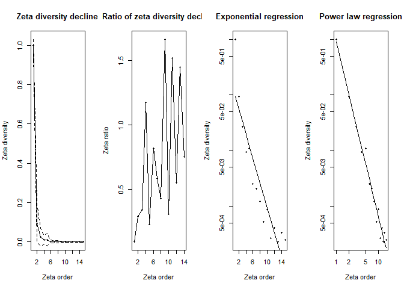
- Panel 1 (Zeta diversity decline): Rapidly declining zeta diversity, similar to previous plots, indicates very few species remain shared across increasingly larger sets of sites, emphasizing strong species turnover and spatial specialization.
- Panel 2 (Ratio of zeta diversity decline): More irregular fluctuations suggest a spatial effect: nearby sites might occasionally share more species by chance due to proximity. The spikes mean certain groups of neighboring sites have higher-than-average species overlap.
- Panel 3 & 4 (Exponential and Power law regressions): Both remain linear, clearly indicating the zeta diversity declines consistently following a predictable spatial pattern. However, the exact pattern remains similar to previous cases, highlighting that despite spatial constraints, common species become rare quickly as more sites are considered.
This result demonstrates clear spatial structuring of biodiversity—species are locally clustered, not randomly distributed across the landscape. Spatial proximity influences which species co-occur more frequently. In practice useZeta.decline.mcfor real‐world biodiversity data—both because it scales and because the Monte Carlo envelope is invaluable when ζₖ gets noisier at higher orders.
12. Calculate Zeta decay for orders 2:8
Zeta distance decay for a range of numbers of assemblages or sites using zetadiv::Zeta.ddecays
Computes the distance decay of zeta diversity for a range of orders (number of assemblages or sites), using generalised linear models. Generate statistics and figures, no maps
# Calculate Zeta.ddecays
zeta_decays = Zeta.ddecays(xy_utm_df[,3:4],
site_spp_pa[,-(1:6)],
sam = 1000,
orders = 2:8,
plot = TRUE,
confint.level = 0.95
)
#> [1] 2
#> [1] 3
#> [1] 4
#> [1] 5
#> [1] 6
#> [1] 7
#> [1] 8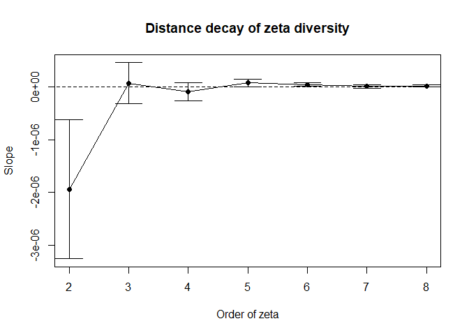
This plot shows how zeta diversity (a metric that captures shared species composition among multiple sites) changes with spatial distance across different orders of zeta (i.e., the number of sites considered at once).
- On the x-axis, we have the order of zeta (from 2 to 7).
For example, zeta order 2 looks at pairs of sites, order 3 at triplets, etc.- On the y-axis, we see the slope of the relationship between zeta diversity and distance (i.e., how quickly species similarity declines with distance).
- A negative slope means that sites farther apart have fewer species in common — so there’s a clear distance decay of biodiversity.
- A slope near zero means distance doesn’t strongly affect how many species are shared among sites.
Key observations: - At low orders (2 and 3), the slope is strongly negative, indicating that species turnover is high over distance when looking at pairs or triplets of sites. - From order 4 and up, the slope becomes close to zero, suggesting that at broader spatial scales (more sites), species similarity is less affected by distance.
This may reflect widespread or core species that are consistently shared regardless of location. - The confidence intervals (error bars) shrink with increasing order, indicating greater stability and reliability of the estimate as more sites are included.
Summary: This figure shows that biodiversity patterns across space are strongly shaped by distance at small scales, but this effect weakens as you include more sites. In other words, rare or localized species contribute to strong distance decay, but widespread species dominate at higher spatial scales, leading to more uniformity. Species that occur in just two or three sites show a clear “farther apart → fewer shared species” pattern. But when you ask about the handful of really widespread species (those present in four, five, or more sites), their shared‐species counts no longer decline with distance—they form a spatially uniform core.
13. Run a Multi-Site Generalised Dissimilarity Model for order 2
Multi-site generalised dissimilarity modelling for a set of environmental variables and distances using zetadiv::Zeta.msgdm
Computes a regression model of zeta diversity for a given order (number of assemblages or sites) against a set of environmental variables and distances between sites. The different regression models available are generalised linear models, generalised linear models with negative constraints, generalised additive models, shape constrained additive models, and I-splines. Generate statistics and figures, no maps and save fitted order 2 model ‘zeta2’
# Compute a regression model of zeta diversity order 2
zeta2 = Zeta.msgdm(site_spp_pa[,-(1:6)],
env_vars_reduced[,-8],
# xy_utm_df[,3:4],
xy[,1:2],
sam = 1000,
order = 2,
distance.type = "Euclidean",# "ortho",
normalize = "Jaccard",
reg.type = "ispline")
# Compute splines coordinates from I-spline-based MSGDM
zeta2.ispline = Return.ispline(zeta2,
env_vars_reduced[,-8],
# legend = FALSE,
distance = TRUE)
# zeta2.ispline
Plot.ispline(isplines = zeta2.ispline, distance = TRUE)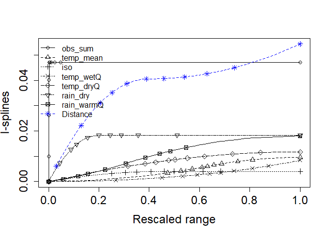
This figure shows the fitted I-splines from a multi-site generalized dissimilarity model (via
Zeta.msgdm), which represent the partial, monotonic relationship between each predictor and community turnover (ζ-diversity) over its 0–1 “rescaled” range. A few key take-aways:
- Distance (blue asterisks) has by far the largest I-spline amplitude—rising from ~0 at zero distance to ~0.05 at the maximum. That tells us spatial separation is the strongest driver of multi‐site turnover, and even small increases in distance yield a substantial drop in shared species.
- Sampling intensity (
obs_sum, open circles) comes next, with a gentle but steady rise to ~0.045. This indicates that sites with more observations tend to share more species (or, conversely, that incomplete sampling can depress apparent turnover).- Precipitation variables: Rain in the warm quarter (
rain_warmQ, squares) and Rain in the dry quarter (rain_dry, triangles-down) both show moderate effects (I-spline heights ~0.02–0.03). This means differences in seasonal rainfall regimes contribute noticeably to changes in community composition.- Temperature metrics: Mean temperature (
temp_mean, triangles-up), Wet‐quarter temperature (temp_wetQ, X’s), Dry‐quarter temperature (temp_dryQ, diamonds), and the isothermality index (iso, plus signs) all have very low, almost flat I-splines (max heights ≲0.01). In other words, these thermal variables explain very little additional turnover once you’ve accounted for distance and rainfall.
Ecological interpretation: Spatial distance is the dominant structuring factor in these data—sites further apart share markedly fewer species. After accounting for that, differences in observation effort and, to a lesser degree, seasonal rainfall still shape multisite community similarity. Temperature and seasonality metrics, by contrast, appear to have only a minor independent influence on zeta‐diversity in this landscape.
# Deviance explained summary results
with(summary(zeta2$model), 1 - deviance/null.deviance)
#> [1] 0.264315
# [1] 0.2461561
# 0.2461561 means that approximately 24.6% of the variability in the response
# variable is explained by your model. This is relatively low, suggesting that the
# model may not be capturing much of the underlying pattern in the data.
# Model summary results
summary(zeta2$model)
#>
#> Call:
#> glm.cons(formula = zeta.val ~ ., family = family, data = data.tot,
#> control = control, method = "glm.fit.cons", cons = cons,
#> cons.inter = cons.inter)
#>
#> Coefficients:
#> Estimate Std. Error t value Pr(>|t|)
#> (Intercept) 0.103685 0.007458 13.903 < 2e-16 ***
#> obs_sum1 -0.047222 0.003601 -13.112 < 2e-16 ***
#> obs_sum2 0.000000 0.016421 0.000 1.000000
#> obs_sum3 0.000000 0.021894 0.000 1.000000
#> temp_mean1 0.000000 0.035343 0.000 1.000000
#> temp_mean2 -0.009559 0.012775 -0.748 0.454502
#> temp_mean3 0.000000 0.015940 0.000 1.000000
#> iso1 -0.004022 0.013746 -0.293 0.769874
#> iso2 0.000000 0.009277 0.000 1.000000
#> iso3 0.000000 0.013286 0.000 1.000000
#> temp_wetQ1 0.000000 0.011252 0.000 1.000000
#> temp_wetQ2 -0.004848 0.009588 -0.506 0.613246
#> temp_wetQ3 -0.003618 0.013219 -0.274 0.784346
#> temp_dryQ1 -0.005572 0.033097 -0.168 0.866337
#> temp_dryQ2 -0.006185 0.010479 -0.590 0.555161
#> temp_dryQ3 0.000000 0.011843 0.000 1.000000
#> rain_dry1 -0.018325 0.007454 -2.458 0.014127 *
#> rain_dry2 0.000000 0.009306 0.000 1.000000
#> rain_dry3 0.000000 0.014403 0.000 1.000000
#> rain_warmQ1 -0.002312 0.008321 -0.278 0.781217
#> rain_warmQ2 -0.015782 0.010613 -1.487 0.137324
#> rain_warmQ3 0.000000 0.020082 0.000 1.000000
#> distance1 -0.040602 0.011229 -3.616 0.000315 ***
#> distance2 0.000000 0.011820 0.000 1.000000
#> distance3 -0.013797 0.015469 -0.892 0.372669
#> ---
#> Signif. codes: 0 '***' 0.001 '**' 0.01 '*' 0.05 '.' 0.1 ' ' 1
#>
#> (Dispersion parameter for gaussian family taken to be 0.001674497)
#>
#> Null deviance: 2.2192 on 999 degrees of freedom
#> Residual deviance: 1.6326 on 975 degrees of freedom
#> AIC: -3527.7
#>
#> Number of Fisher Scoring iterations: 214. Predict current Zeta Diversity (zeta2) using predict_dissim
- In the ‘sbe’ add ‘sam.max’, a constant for all sites = max(sam.eff)
- Predict for the updated sbe and xy
- Produce a site by site matrix of predicted zeta ‘zeta.now’
# Predict current zeta diversity using `predict_dissim` with sampling effort, geographic distance and environmental variables
# Only non-colinear environmental variables used in `zeta2` model
predictors_df = predict_dissim(
block_sp = grid_spp[,-c(4:6)],
sbe = sbe[,-c(1:3)],# env_vars_reduced[,-8]
zeta_model = zeta2,
mean_rich = mean_rich_o1234,
mean_turn = mean_turn_o2345,
sbs_xy = xy,
x_col = "centroid_lon",
y_col = "centroid_lat",
rsa = rsa
)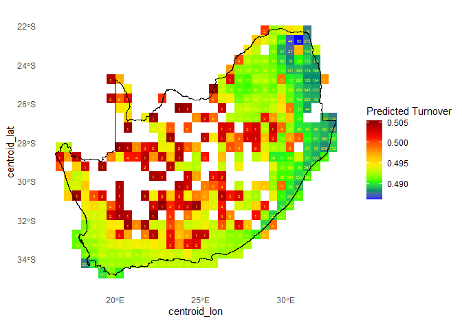
# Check results
dim(predictors_df)
#> [1] 415 29
head(predictors_df[,1:7])
#> obs_sum spp_rich temp_mean mdr iso temp_sea temp_max
#> 1 3 2 21.88425 14.47900 55.67347 427.1824 32.446
#> 2 41 31 21.76921 14.61358 53.90477 453.1160 32.977
#> 3 10 10 21.53492 14.00267 56.31250 392.8977 31.662
#> 4 7 7 23.01796 13.67825 57.83615 357.9102 32.791
#> 5 6 6 23.59879 13.83525 59.58590 334.4157 33.509
#> 6 107 76 24.57367 14.64933 61.67101 332.0319 34.788- Run nmds for the predicted zeta matrix
- Plot RGB of the 3 component scores
15. Run clustering analyses using map_bioreg
- Map bioregion clusters of current zeta2
- Generate maps of dissimilarity (the rgb plot)
- Generate map of bioregions (from clustering)
# Run `map_bioreg` function to generate and plot clusters
bioreg_result = map_bioreg(
data = predictors_df,
scale_cols = c("pred_zeta", "centroid_lon", "centroid_lat"),
clus_method = "all", # K-means, PAM, Hierarchical and GMM clustering
plot = TRUE,
interp = "both",
x_col ='centroid_lon',
y_col ='centroid_lat'
)
#> fitting ...
#> | | | 0% | |====== | 7% | |============ | 13% | |================== | 20% | |======================== | 27% | |============================== | 33% | |==================================== | 40% | |========================================== | 47% | |================================================ | 53% | |====================================================== | 60% | |============================================================ | 67% | |================================================================== | 73% | |======================================================================== | 80% | |============================================================================== | 87% | |==================================================================================== | 93% | |==========================================================================================| 100%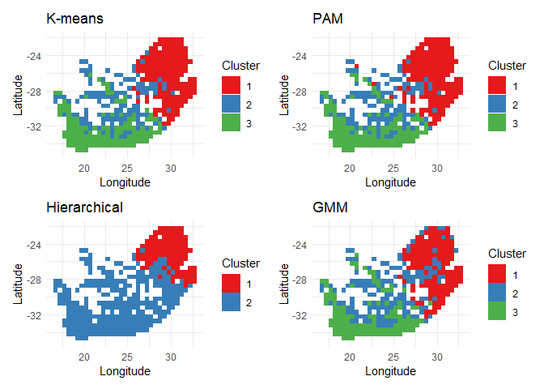
16. Predict future Zeta Diversity and map bioregion change using map_bioregDiff
- with appended (future scenarios) environmental variables and ‘sam.max’ in sbe
- For m number of scenarios plus the present scenario (step 14) and n sites of xy
- Updated sbe.future will have k = (m+1) x n number of rows
- ‘xy’ also updated with k rows
- Predict a k by k matrix of predicted zeta ‘zeta.future’
# NOT RUN YET
# future_df = predict_dissim(
# block_sp = grid_spp[,-c(4:6)],
# sbe = sbe[,-c(1:3)],
# zeta_model = zeta2,
# mean_rich = mean_rich_o1234,
# mean_turn = mean_turn_o2345,
# sbs_xy = sbs_xy,
# x_col = "centroid_lon",
# y_col = "centroid_lat",
# rsa = rsa
# )
# Check results
# dim(future_df)
# head(future_df[,1:7])
# Run `map_bioregDiff`
# 'approach', specifies which metric to compute:
# >> "difference_count": Counts cells with differing values across layers
# >> "shannon_entropy": Calculates Shannon entropy, measuring diversity within layers
# >> "stability": Identifies stable regions where values remain unchanged.
# >> "transition_frequency": Quantifies the frequency of changes between layers
# >> "weighted_change_index": Weighted score to changes based on a dissimilarity matrix
# >> "all" (default): Returns all metrics as a combined SpatRaster
result_bioregDiff = map_bioregDiff(bioreg_result$clusters,
approach = "all")
# See results
result_bioregDiff
#> class : SpatRaster
#> dimensions : 25, 32, 5 (nrow, ncol, nlyr)
#> resolution : 0.5, 0.4999984 (x, y)
#> extent : 16.75, 32.75, -34.75, -22.25004 (xmin, xmax, ymin, ymax)
#> coord. ref. : lon/lat WGS 84 (EPSG:4326)
#> source(s) : memory
#> names : Differ~_Count, Shanno~ntropy, Stability, Transi~quency, Weight~_Index
#> min values : 0, 0.000000, 0, 0, 0.00000
#> max values : 3, 1.039721, 1, 3, 2.52819
# Mask `result_bioregDiff` to the RSA boundary
mask_bioregDiff = mask(resample(result_bioregDiff, grid_masked, method = "near"), grid_masked)
# Plot all change results
plot(mask_bioregDiff, col = viridis(100, direction = -1))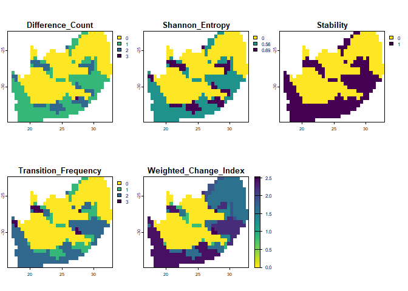
- Nmds of zeta.future
- Clustering of zeta.future
- Map sub matrices to indicate predicted future dissimilarity
- Map predicted future bioregions
-
Map temporal turnover Note: step 14 is redundant if step 16 is needed
Note: step 16 has the same code but more results including those from step 6 but potentially computational demanding